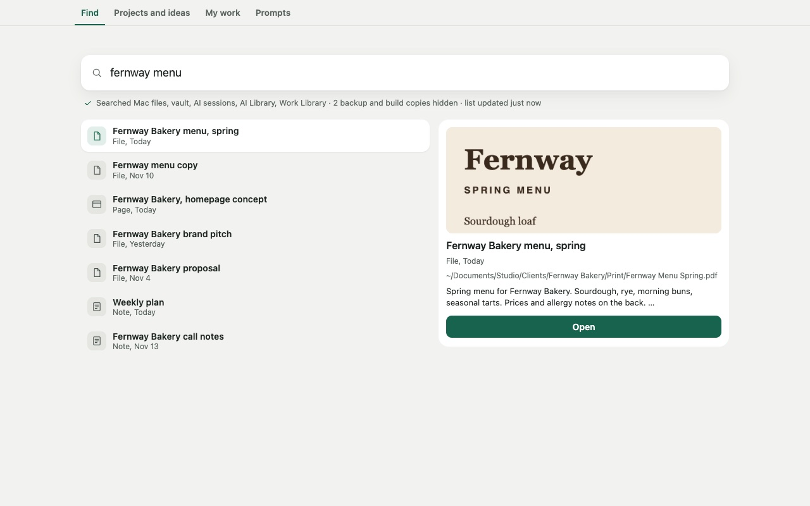
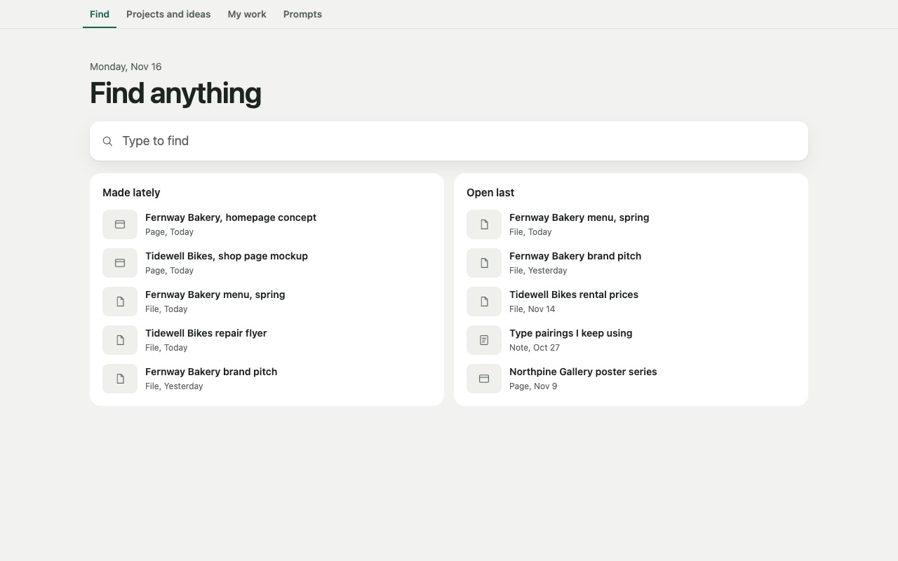
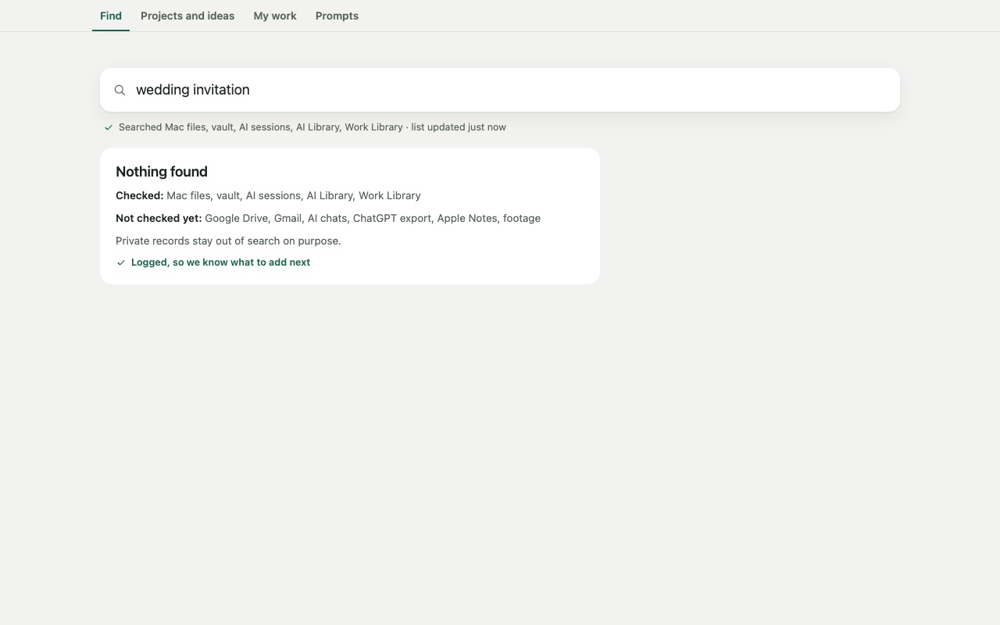
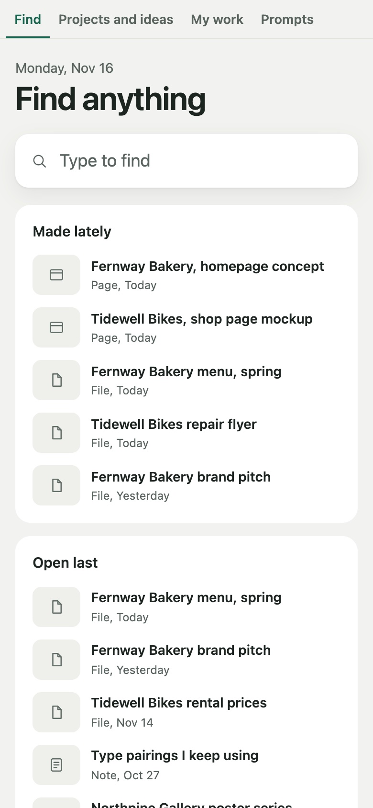
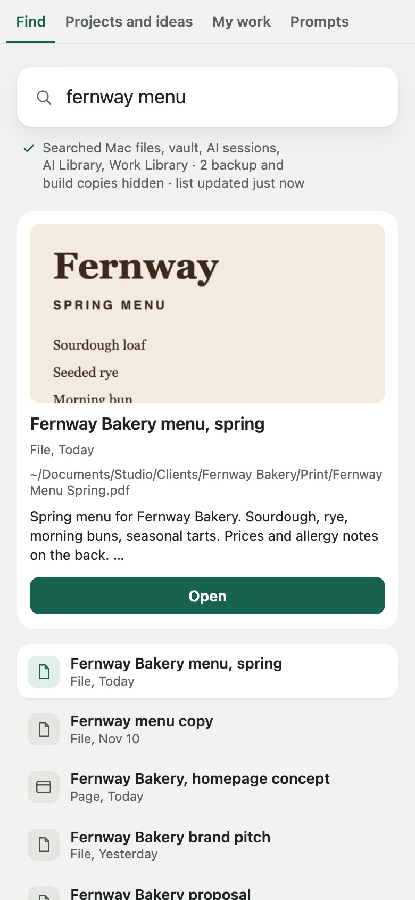

Pages, decks, notes, prototypes and AI sessions, spread across a Mac, a notes vault and several libraries. I couldn't find any of it. So I designed one search door for all of it, saw the plan before anything was built, shipped it in four releases, and set the pass bar before calling it a success.

I build a lot with AI agents, quickly. Every tool made its own home for its output, and I was the one left hunting. The same complaint shows up in my own words from mid-October into November.
A Mac, a notes vault, an AI idea library, a work library and old AI sessions, each with its own way in.
By Nov 6 the count was three doors and five search boxes, all built to fix the same problem.
Some files must never show up in a search, however well it matches.
"i still feel like i've overcomplicated this whole system."Oct 16, 2026
"...it's overwhelming and I keep having to hunt and find folders inside of folders and not truly knowing where everything is."Oct 23, 2026
"i cannot seem to ever find the stuff we make"Nov 2, 2026
Six routes on the table. I picked the smallest.
The plan went through five drafts on Nov 4 and laid out six routes, from a full platform down to repairing what was already there. I chose search first. Then three looks, shown as pages I could see rather than described.
Apple-like: quiet type, lots of room. "i like apple's website look and functions too."
monday.com-like: status pills and colour everywhere.
Apple's calm, with colour only when something needs me.
"i like look c and want to start with that one. before building, i want to see the plan layed out visually for me so i can make tweaks before wasting tokens on builds."Nov 6, 2026, 10:50
The visual plan showed the whole road as five steps, with only the first one built. Two things in the design were switched off on purpose: an Ask button and status pills, because neither could work in the first build.
"Looks right, build Find"Nov 6, 2026, 11:51
"I think i've got clashing ideas and tools i've created... so my goal is to plan the ONE system/tool/software..."Nov 6, 2026, 13:34
Three doors and five search boxes became one door, with tabs across the top.
Find became the front page; the other libraries open as tabs inside it (v2, Nov 9), down to phone width.


Which sources were searched, how many backup and build copies were hidden, and how fresh the list is.
Old drafts and export copies collapse under the newest one, so the top result is the file I mean.
Private records are kept out of the list itself, not just hidden on screen, so search can't surface them.
A preview with the path and the matching passage, and one Open button, with arrow keys and Enter for the keyboard.


Releases in five days: v1, v2, v2.1, v2.3.
Items in the list on Nov 16, about 45,000 of them shown in search after copies and clutter are hidden.
Real hunts that landed in the top 3 results.
Weekdays I opened it, against a bar of 5 of 10.
I set the pass bar before judging it: 8 of 10 real hunts found, and Find opened on 5 of 10 weekdays. Hunts: 5 of 6 so far, with 4 slots still open, so that half can't be judged yet. Use is not: 3 of the first 10 weekdays, with 7 of them gone by. v2 was checked across 22 screens, 11 at Mac width and 11 at phone width.